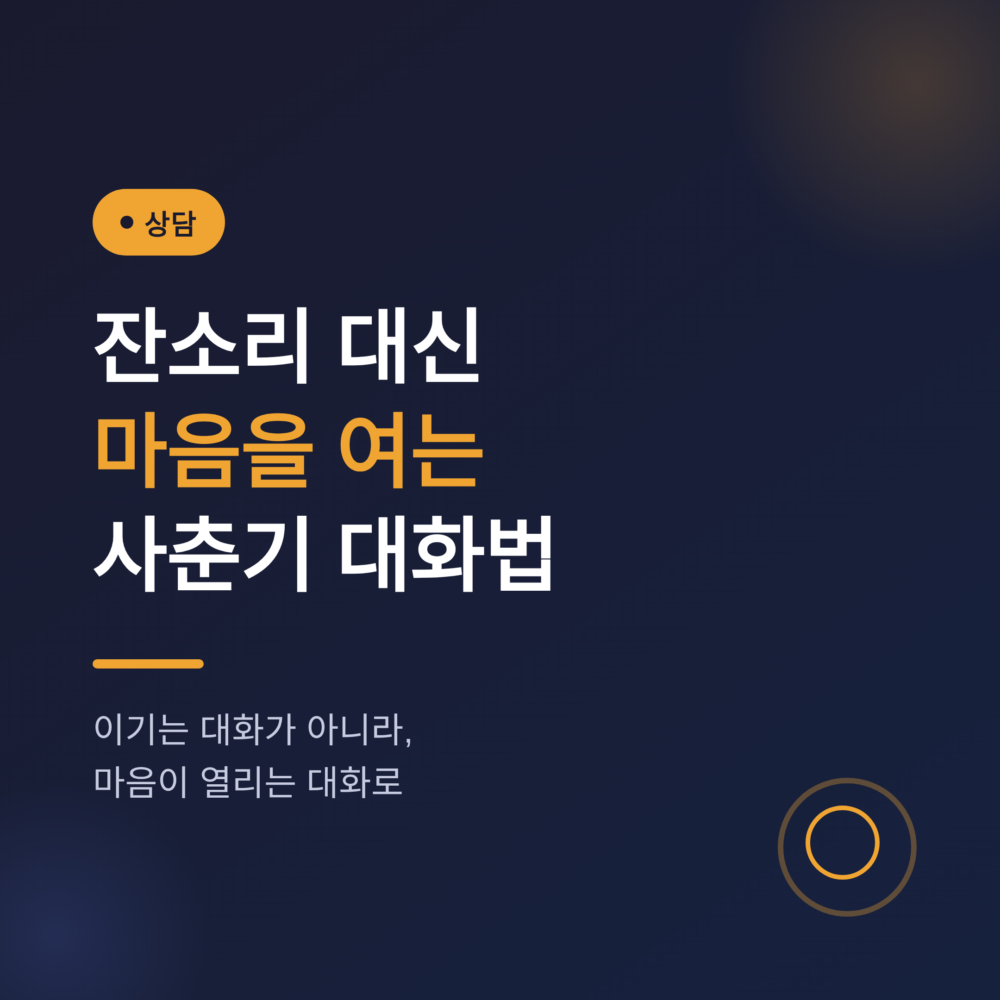
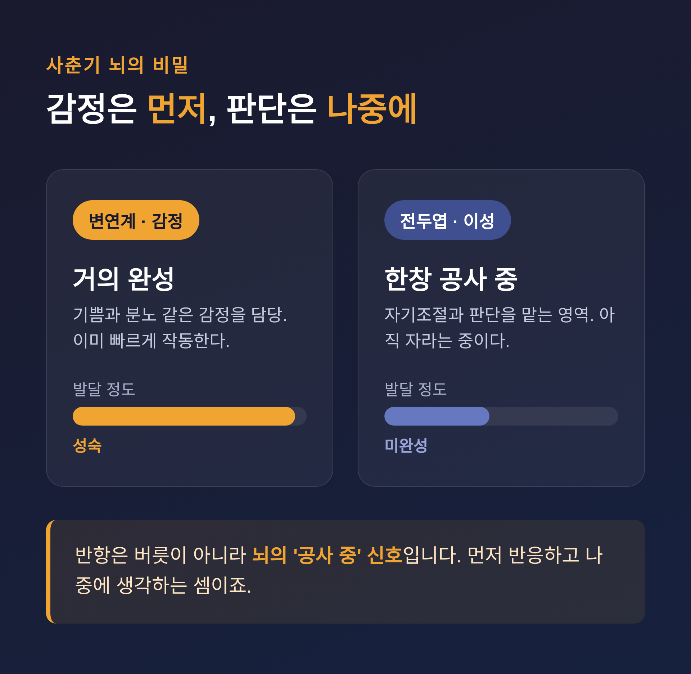
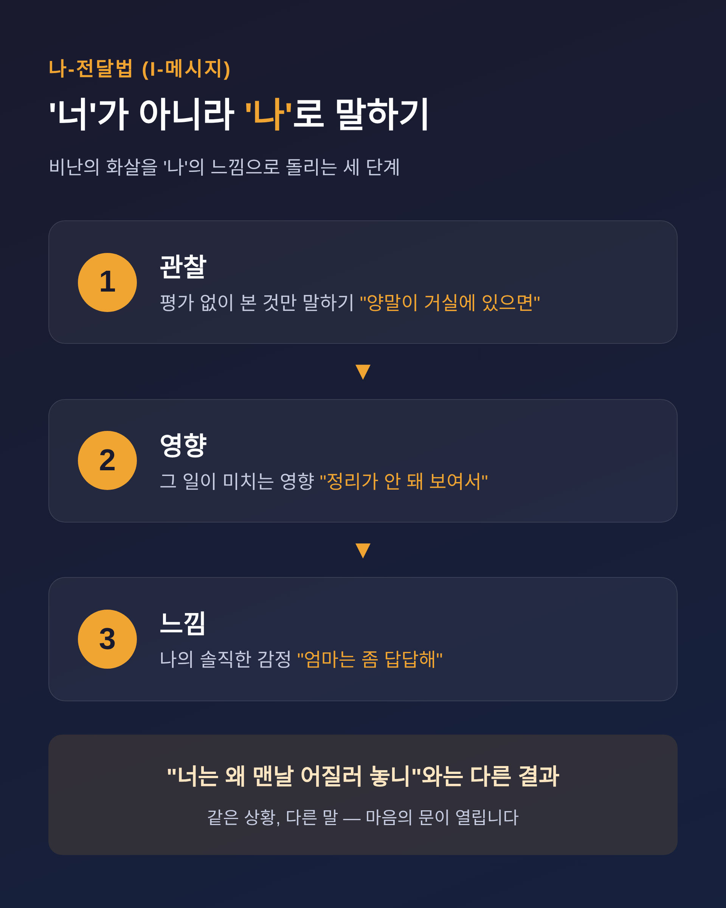
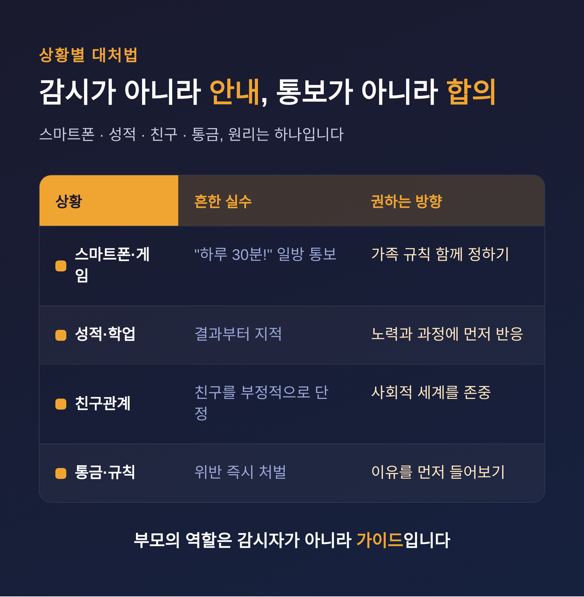

사춘기 자녀와의 대화법, 잔소리 대신 마음을 여는 법
사춘기 자녀와 대화가 점점 어려워지셨다면 이 글이 도움이 될 것입니다. 핵심부터 말씀드리면, 답은 더 많은 말이 아니라 더 적은 잔소리와 더 깊은 경청에 있습니다. 오늘은 마음을 여는 대화의 원리와 상황별 대처법을 정리해 보겠습니다.

반항은 버릇이 아니라 뇌의 '공사 중' 신호입니다
갑자기 과묵해지고 사소한 일에 발끈하는 모습. 버릇이 없어서가 아닙니다.
청소년기의 뇌는 감정을 담당하는 변연계가 거의 완성되는 반면, 이성과 자기조절을 맡는 전두엽은 아직 한창 자라는 중입니다. 감정이 먼저 터지고 판단은 뒤따라옵니다. 먼저 반응하고 나중에 생각하는 셈입니다.
이 사실 하나만 기억해도 태도가 달라집니다.
예전엔 "왜 저렇게 버릇없이 구나" 싶었던 일이, 지금은 "지금 뇌가 공사 중이구나"로 보입니다. 맞받아치는 싸움 대신 기다려주는 여유가 생깁니다.
다만 오해는 마시기 바랍니다. 기다림은 방치가 아닙니다. 아이는 독립을 원하면서도, 곁에 있어 주는 어른과의 양질의 시간을 여전히 필요로 합니다.

우리가 모르고 쓰는 '대화의 걸림돌'
대화가 막히는 데는 이유가 있습니다.
심리학자 토머스 고든은 부모가 자주 쓰는 표현을 '대화의 걸림돌'로 정리했습니다. 명령, 경고, 설교, 충고, 비판, 캐묻기, 비꼬기 같은 반응입니다.
우리가 흔히 말하는 잔소리·비교·심문·훈계가 사실은 이 걸림돌입니다.
- 심문: "오늘 어디 갔다 왔어? 누구랑? 왜?"
- 훈계: "다 너 잘되라고 하는 말이야."
- 비교: "옆집 애는 알아서 한다더라."
이런 말은 좋은 뜻으로 시작해도 아이에게는 화풀이로 들립니다. 잔소리를 들을 때 청소년의 뇌에서는 부정적 감정을 처리하는 영역이 켜지고, 상대의 입장을 헤아리는 영역은 오히려 잠잠해진다는 보고도 있습니다.
정작 하려던 말은 전해지지 않고, 관계만 멀어지는 것입니다.
마음을 여는 세 가지 기술
그렇다면 무엇으로 바꿔야 할까요. 핵심 기법을 정리하면 이렇습니다.
1. 적극적 경청 — 감정에 이름을 붙여주기
판단을 잠시 내려놓고, 들은 내용과 감정을 되비춰 줍니다.
"시험 때문에 진짜 부담됐겠다."
아이는 자기 마음을 알아주는 한 문장에 비로소 입을 엽니다.
2. 나-전달법(I-메시지) — '너'가 아니라 '나'로 말하기
비난의 화살을 '나'의 느낌으로 돌리는 화법입니다. 구조는 단순합니다.
- [관찰] 양말이 거실 여기저기 있으면
- [영향] 정리가 안 돼 보여서
- [느낌] 엄마는 좀 답답해
"너는 왜 맨날 어질러 놓니"와 비교하면 차이가 분명합니다. 같은 상황, 다른 결과입니다.
3. 비폭력대화(NVC) — I-메시지의 정교한 버전
마셜 로젠버그가 고안한 네 단계입니다. 관찰 → 느낌 → 욕구 → 부탁의 순서로 말합니다. 평가 없이 본 것을 말하고, 내 느낌과 그 뒤의 바람을 밝힌 뒤, 구체적으로 부탁하는 것입니다.

여기에 한 가지를 더합니다. 자율성 존중. 조언은 하되 선택은 아이에게 맡깁니다. 그리고 타이밍. 사춘기 아이는 "얘기 좀 하자"는 말 자체를 싫어합니다. 정색하고 마주 앉기보다, 차 안이나 산책길처럼 부담 없는 순간이 낫습니다.
상황별 대처 — 스마트폰·성적·친구·통금
원리는 같습니다. 통보가 아니라 합의, 감시가 아니라 안내입니다.
| 상황 | 흔한 실수 | 권하는 방향 |
|---|---|---|
| 스마트폰·게임 | "하루 30분!" 일방 통보 | "우리 가족 규칙 같이 만들어볼까?" 함께 정하기 |
| 성적·학업 | 결과부터 지적 | 노력과 과정에 먼저 반응 |
| 친구관계 | 친구를 부정적으로 단정 | 아이의 사회적 세계를 존중 |
| 통금·규칙 | 위반 즉시 처벌 | 이유를 먼저 들어볼 환경 만들기 |
스마트폰은 시간 제한보다 상황 규칙이 효과적입니다. 식사 중 금지, 취침 한 시간 전 종료처럼 맥락을 정하는 편이 낫습니다. 요즘 게임은 또래와 어울리는 사회활동의 일부이기도 합니다. 무작정 끊으라기보다 그 의미를 이해하고 협상하실 만합니다.
부모의 역할은 감시자가 아니라 가이드입니다. 진짜 목표는 아이가 스스로 멈춤 버튼을 누르는 자기조절 능력을 기르는 것입니다.

모든 기술의 토대는 '관계'입니다
좋은 화법도 신뢰가 없으면 또 다른 잔소리로 들립니다.
대화 기술은 좋은 관계라는 토대 위에서만 작동합니다. 그러니 순서가 중요합니다. 옳고 그름을 가리기보다, 관계를 지키는 일이 먼저입니다.
당장의 논쟁에서 이기는 것보다, 아이가 "엄마 아빠한테는 말해도 되는구나"라고 느끼게 하는 것. 그것이 더 오래 남습니다.
완벽한 부모가 정답은 아닙니다. 실수했을 때 솔직히 인정하고 다시 다가가는 모습이, 오히려 더 건강합니다.
전문가의 도움이 필요한 신호
대부분의 반항과 짜증은 정상 범위입니다. 다만 경계는 분명히 알아두셔야 합니다.
청소년 우울은 슬픔보다 짜증·무기력·위축의 형태로 나타나 '단순 사춘기'로 오인되기 쉽습니다. 아래 신호가 길게 이어진다면 가볍게 넘기지 마시기 바랍니다.
- 우울·무기력이 오래 지속됨
- 학습 참여 감소, 사회적 위축 등 일상 기능 저하
- 즐기던 일에 흥미를 잃고 말수가 크게 줄어듦
- 자해 생각이나 극단적인 말
특히 청소년기에는 사소해 보이는 문제에도 충동적으로 위기가 찾아올 수 있습니다. 작은 징후도 놓치지 않으시길 권합니다.
- 청소년전화 1388 — 청소년상담복지센터 운영, 24시간 위기·고민 상담
- 자살예방 상담전화 109 — 2024년부터 통합된 최신 번호
- 정신건강 상담전화 1577-0199 — 정신건강복지센터 연계
- 청소년상담복지센터(전국) — 만 14세 이상은 부모 동의 없이 무료 상담 가능
끝으로 한 마디만 더 드리겠습니다.
사춘기 자녀와의 대화에서 남는 것은 결국 하나입니다 — "이기는 대화가 아니라, 마음이 열리는 대화."
오늘 당장 모든 것을 바꾸기는 어렵습니다. 다만 잔소리 한 마디를 줄이고 그 자리에 "그랬구나" 한 마디를 놓아보신다면, 닫힌 문은 생각보다 천천히, 그러나 분명히 열릴 것입니다.